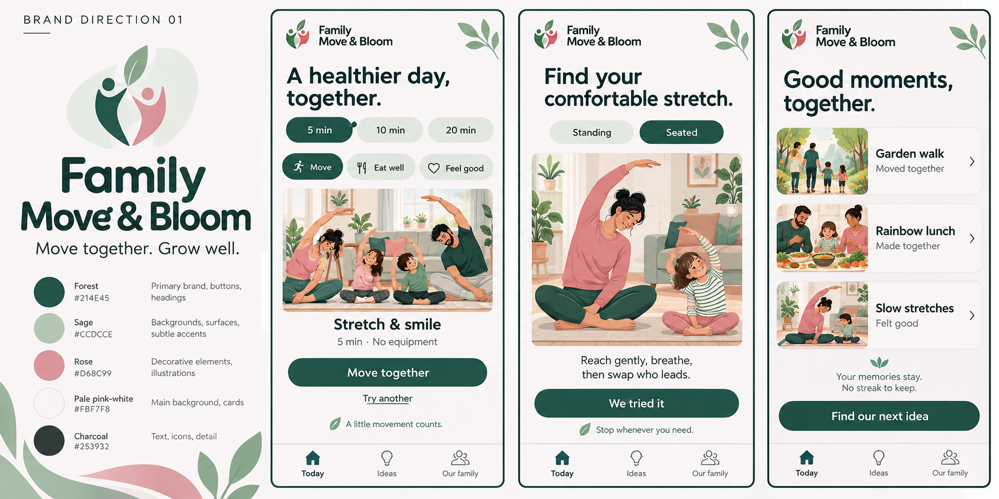
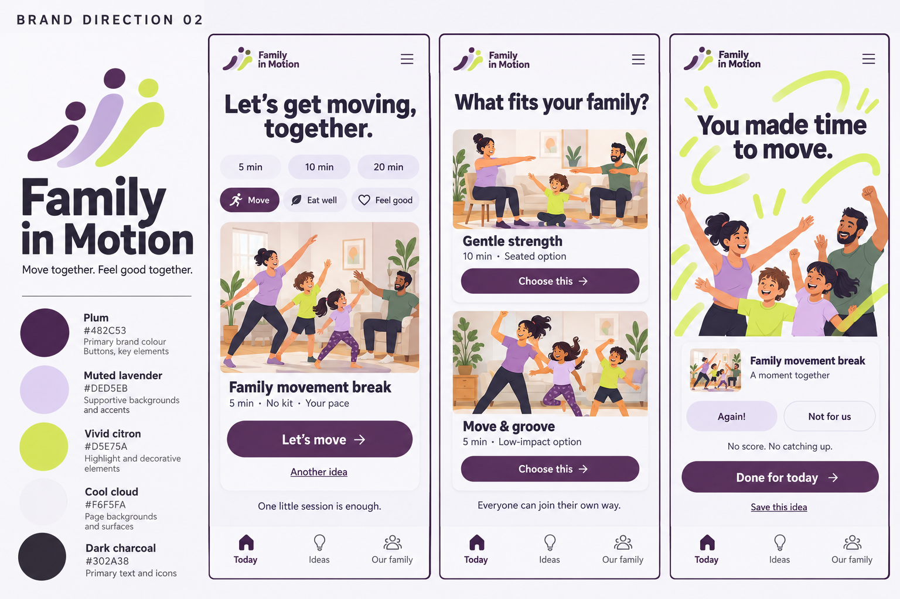
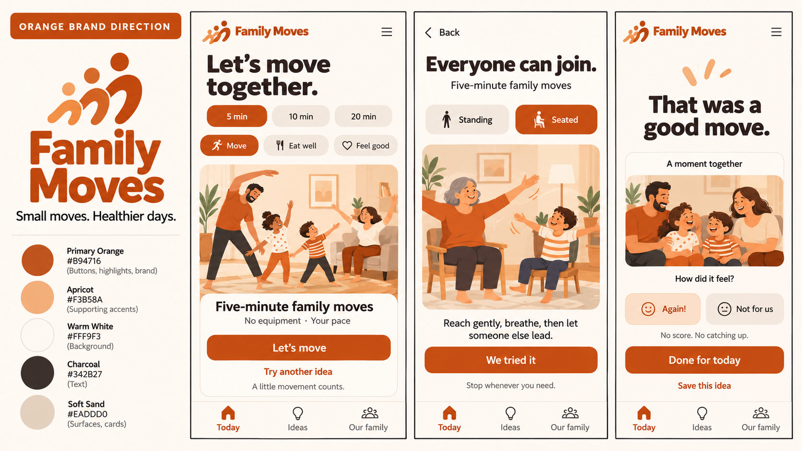

Family Move & Bloom
Move together. Grow well.Forest, sage and rose give this identity a softer warmth. Movement imagery keeps its purpose clear, while the leaf-like reaching mark hints at feeling stronger and better together.

#214E45
#CCDCCE
#D68C99
#FBF7F8
#253932
Warm humanist typography, familiar family scenes, gentle organic shapes and spacious instructions.
Keep the health and fitness purpose prominent so the botanical metaphor does not suggest a gardening app.
Family in Motion
Move together. Feel good together.Plum, lavender and citron feel more energetic. Confident headings and curved movement accents suggest an active family app while gentle options and easy exits keep it welcoming.

#482C53
#DED5EB
#D5E75A
#F6F5FA
#302A38
Bold readable type, contemporary activity illustrations and a brighter sports-editorial energy.
Make gentle, seated and low-impact options visible so families do not expect intense training.
Family Moves
An orange family fitness & wellbeing identityBurnt orange brings energy to the brand and primary actions. Apricot, warm white, sand and charcoal keep the experience approachable, with room for movement, healthy food and feeling good.

#B94716
#F3B58A
#FFF9F3
#342B27
#EADDD0
Friendly readable type, familiar family movement scenes and a confident orange action colour.
Movement, food and wellbeing stay visible. Seated options and Done for today keep participation flexible.